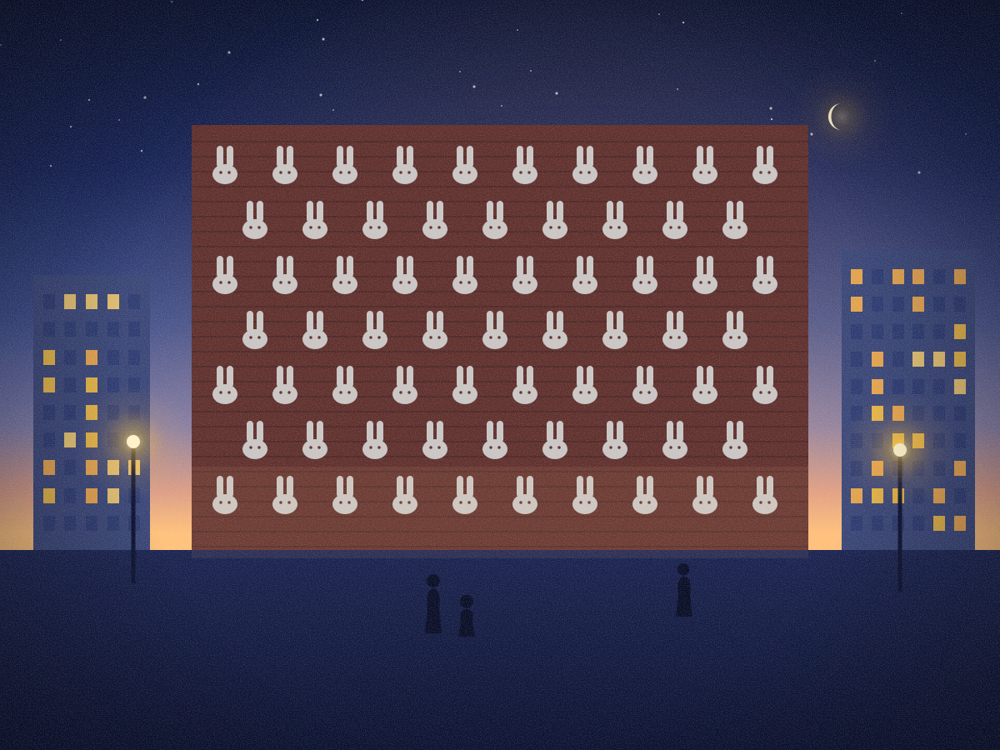
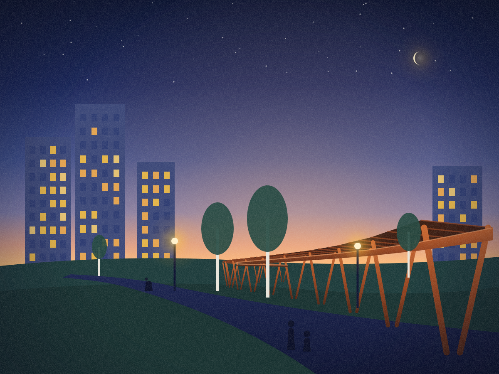
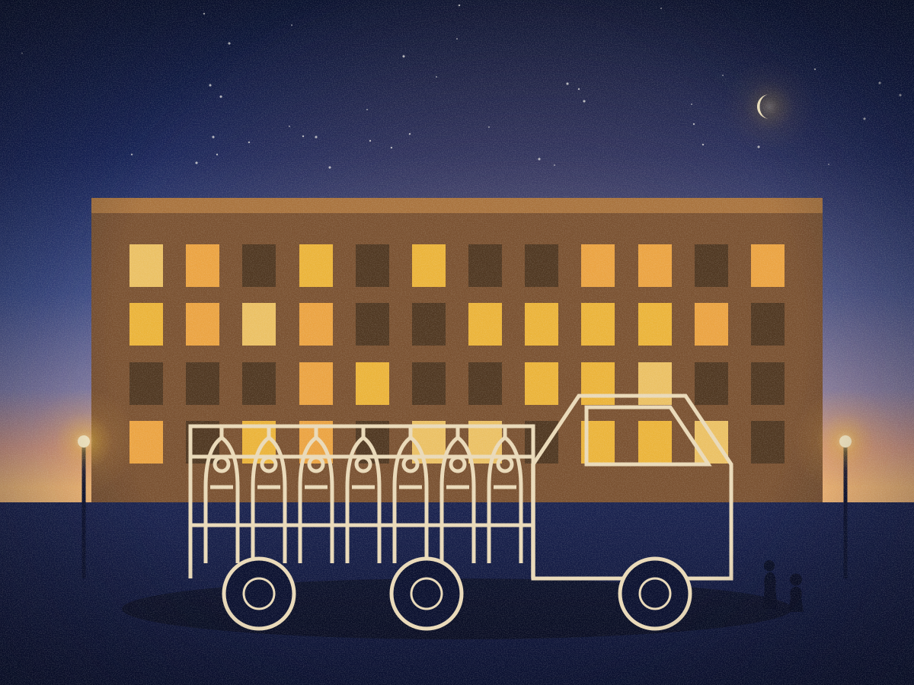
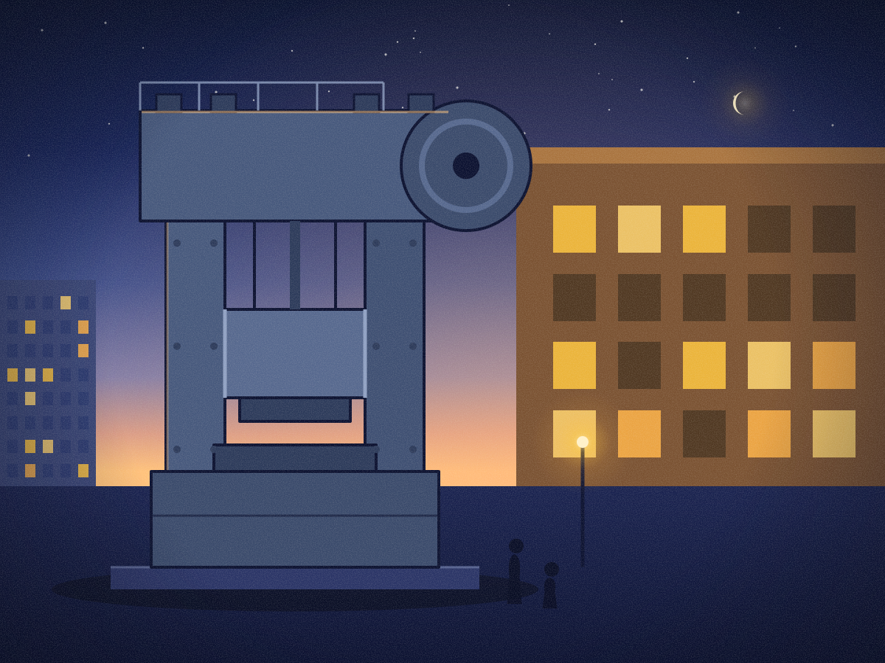
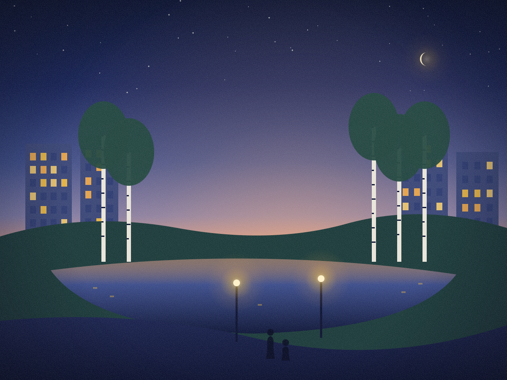
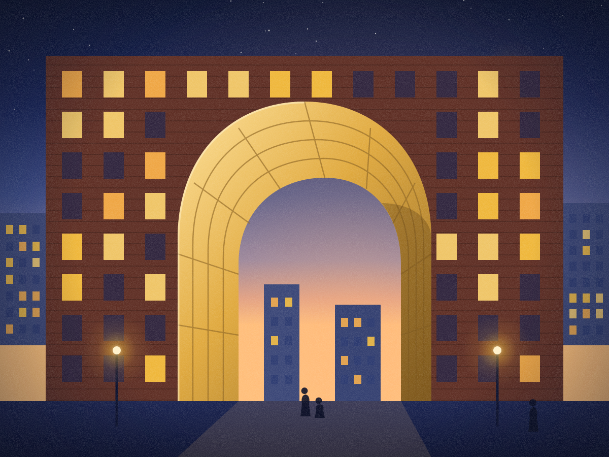

Кандинский. «Композиция VII»
Цвета и линии без единого узнаваемого предмета: одна из главных абстрактных картин XX века. В ЗИЛАРТе есть улица Кандинского.
Государственная Третьяковская галерея
Осенью 1931 года почтовый голубь нёс над заводом письмо. В письме кто-то дал честное слово, но главное слово в нём смыто. Девяносто пять лет это письмо считают недоставленным.
Сегодня его вскроют при вас. Кто дал слово, о чём — и сдержал ли он его?

Ведёт дело Зиля, почтовый голубь в пятом поколении и сыщик Бюро недоставленного. За сто лет его род не донёс всего одно письмо, и Зиля хочет снять с рода это пятно.
Рядом ходит рыжий кот Тюфель. Его род с того вечера считают виноватым, а сам он уверяет, что ищет в письме клад. Версия есть у сыщика, у кота и у бюро. Проверять их вам — по тому, что видно на месте.
Вскрытое письмо бюро обязано сдать обратно в архив в тот же день. Вопросов три, а день один.
… не тронут. Слово.
Главное слово смыто. Девяносто пять лет письмо считают недоставленным.«Чужих писем мы не читаем. Это вопрос чести. Ну и грамотности»
Шесть мест с маршрута, не по порядку. Остальные, как и сам маршрут, откроются по ходу квеста.

С кирпичной стены на вас глядят белые заячьи морды. Сколько их на доме, попробуйте угадать.

Тянется через всю «Тюфелеву рощу». А почему она такая рыжая?

Грузовик, который не перевезёт ни грамма.
По данным музея «ЗИЛАРТ», скульптура выставлена до 17 января 2027 года.

Станок с завода, которого больше нет. Что о нём расскажет табличка?

Здесь начинается история девушки, которой никогда не было. Как она попала на карту Москвы?

Золотой свод сквозь кирпичный дом. Зайдите под него и поднимите голову.
Где-то надо прочесть табличку, где-то сверить рисунок с домом, а где-то поправить сыщика: Зиля ошибается и сам это признаёт. Все версии записаны на доске, и неверные вы зачёркиваете вместе с ним.
На каждую загадку есть три подсказки, третья — готовый ответ, так что проиграть нельзя. Вопросы на ходу — по желанию: на ход дела они не влияют, зато идти веселее. Для самых маленьких есть свои задания.
Один код доступа на всю компанию. Продажи скоро откроются.
Это станция Троицкой линии. Квест открывается в браузере, устанавливать ничего не нужно.
Улики — на табличках, фасадах и в парке. Прогресс сохраняется.
Разгадка складывается из ваших находок. Финиш — в парке у того же метро.
Улицы ЗИЛАРТа названы в честь художников и архитекторов авангарда. Вот что они сделали — и что было на этом месте раньше.
Цвета и линии без единого узнаваемого предмета: одна из главных абстрактных картин XX века. В ЗИЛАРТе есть улица Кандинского.
Государственная Третьяковская галерея
Собор будто рассыпается на цветные осколки и тут же собирается снова: так Лентулов видел Москву. Теперь его имя носит улица там, где гудел автозавод.
Государственная Третьяковская галерея
Плакат Гражданской войны, сложенный из одних геометрических фигур, — и всё понятно без слов.
Архитектор построил его для себя в Кривоарбатском переулке. Улица Архитектора Мельникова — в ЗИЛАРТе.
Огромная наклонная спираль — памятник, который Татлин придумал, но так и не построил.
Одна из самых известных картин Шагала: люди летят над крышами. В ЗИЛАРТе его именем названа набережная Москвы-реки.
Государственная Третьяковская галерея
Родченко снимал под непривычными углами и учил смотреть на город по-новому.
Варвара Степанова придумывала геометрические узоры для ситца, и их печатали на ткани массовыми тиражами.
Почти сто лет здесь выпускали машины. На месте цехов теперь парк «Тюфелева роща», набережная и кварталы с улицами в честь художников.
Дворец культуры ЗИЛ спроектировали братья Веснины. Сейчас это Культурный центр ЗИЛ на Восточной улице, рядом с ЗИЛАРТом.
ЗИЛАРТ — новый район на юге Москвы, у Москвы-реки, на территории бывшего автозавода ЗИЛ. Почти сто лет здесь выпускали машины, а теперь на месте цехов — парк «Тюфелева роща», набережная, музей и кварталы, где каждая улица носит имя художника или архитектора.
На территории бывшего завода 14 улиц, и почти все названы в честь тех, кто в начале XX века придумывал новое искусство и новую архитектуру.
А вот улицы Малевича в этом списке нет.
Квест начинается у станции метро «ЗИЛ» Троицкой линии. Её открыли вместе с «Вавиловской», «Академической» и «Крымской». Не путайте её со станцией «ЗИЛ» на МЦК: это другая станция.
Финиш — в парке «Тюфелева роща», у того же метро «ЗИЛ».
Старт у метро «ЗИЛ» Троицкой линии (не МЦК), выход 1. Финиш в парке «Тюфелева роща», у того же метро.
Около 2,5–3 часов: 10 точек, около 3 км пешком. Многое зависит от вашего темпа.
Да, квест 0+. Основные загадки рассчитаны на взрослых, детям примерно с 6 лет интересно решать их вместе со взрослыми. Для самых маленьких есть свои задания по желанию.
990 ₽ за квест: один код доступа на всю компанию, сколько бы вас ни было. Хватит одного телефона. О старте продаж объявим в Telegram-канале «Дворами».
В любой день, без расписания и записи: начинаете, когда пришли к метро «ЗИЛ».
Да, в любое время года. Маршрут почти весь под открытым небом, так что одевайтесь по погоде, а погреться можно в ТЦ «ЗУМ» по дороге. Зимой рано темнеет, поэтому выходите так, чтобы закончить засветло: таблички и фасады лучше видно при свете.
Нет. Все загадки решаются снаружи: по табличкам, фасадам и тому, что видно вокруг.
Маршрут проходит по тротуарам, набережной и дорожкам парка. Везде ли удобно с коляской, пока не знаем точно.
По дороге — торговый центр «ЗУМ» с кафе и туалетами, а на бульвар Братьев Весниных выходят кафе. Ближе к концу маршрута квест сам подскажет, где передохнуть.
Да: квест открывается в браузере, а дорогу к точкам показывают Яндекс Карты. Зарядите телефон перед стартом. Прогресс сохраняется, можно закрыть страницу и вернуться к той же точке.
Открыть подсказку. У каждой загадки их три, и последняя — это ответ. Проиграть нельзя.
Парк «Тюфелева роща» с прудом и длинной перголой, набережную Марка Шагала, дом с белыми зайцами на фасаде, золотую арку и музей «ЗИЛАРТ» — всё это на маршруте квеста. Рядом с районом, на Восточной улице, — Культурный центр ЗИЛ, бывший Дворец культуры автозавода.
Взять дело можно будет здесь. О старте продаж первыми узнают в Telegram-канале «Дворами».
Исторические факты на этой странице сверены по публикациям: